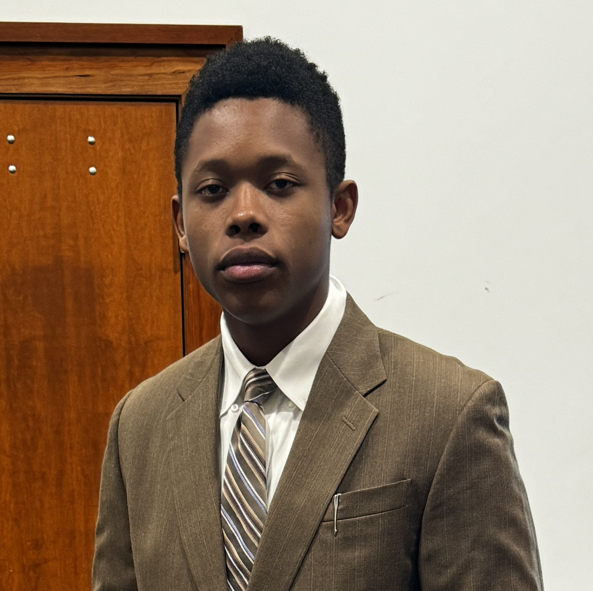

Hello, I'm
I build intelligent autonomous systems — from GPS-denied UAV navigation to published aerospace research. Not just studying the future — engineering it.

I'm Soughtout Chijioke Joseph — an Electrical & Computer Engineering student at Baylor University, conducting cutting-edge research at the Advanced Vehicle Intelligence & Autonomy (AVIA) Lab under real-world, high-impact projects.
My work spans GPS-denied UAV navigation, autonomous robot simulation, Navy-sponsored precipitation testing, astrodynamics, and AI-driven decision-making for aerial vehicles. I'm a published AIAA SciTech 2026 author, a 3× Dean's List scholar, and one of 162 selected participants in the Black in AI Emerging Leaders in AI (ELAI) graduate preparation program.
I'm equally driven by impact beyond the lab — as founder of CTRL Decode, I make tech and AI accessible to the next generation. As a Technical Mentor at MIT Beaver Works Summer Institute, I guide students through CubeSat systems design and aerospace engineering.
Advanced Vehicle Intelligence & Autonomy (AVIA) Lab · Baylor University
Jacobs Sensor Lab · University of Memphis
Space Technology & Aeronautical Rocketry (STAR) · Remote, India
Mitsubishi Chemical / Center for Applied Earth Science & Engineering Research (CAESER) · Memphis, TN
Rotating real-time object detection radar. Achieved ±1 cm accuracy at a 10 Hz update rate — custom embedded control logic written in C++ on Arduino with live distance visualization.
Amplitude modulation system with real-time parameter control and live waveform visualization built using MATLAB Simulink dashboards.
Validated, reusable MATLAB Simulink subsystem computing wind chill temperature from air temperature and wind speed with block-level modeling and rigorous debugging.
Personal media brand decoding tech, AI, and robotics news for the next generation. Weekly posts on LinkedIn and Instagram — storytelling meets engineering.
American Institute of Aeronautics and Astronautics (AIAA) — SciTech Forum 2026
DOI: 10.2514/6.2026-1992
National Society of Black Engineers Technical Research Exhibition (TRE), 2025
Honors College Research Forum, University of Memphis, 2025
Open to research collaborations, industry internships, full-time roles, and PhD opportunities in robotics, autonomy, AI, and embedded systems. My inbox is always open.